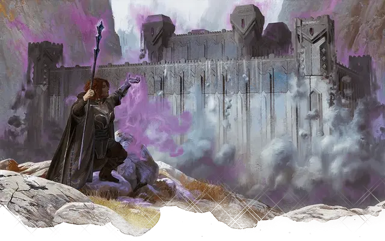

Могучая крепость
Mighty Fortress
8 уровень, Вызов

Время сотворения 1 минута
Дистанция 1 миля
Компоненты В, С, М (бриллиант стоимостью не менее 500 зм, расходуемый заклинанием)
Длительность Мгновенная
Классы Волшебник
Каменная крепость вырывается из квадратного участка земли, который вы можете видеть в пределах дистанции. Сторона этого квадрата составляет 120 футов, и на ней не должно быть никаких зданий или других сооружений. Любые существа в этом участке безвредно поднимаются вместе с крепостью.
У крепости есть четыре башни с квадратными основаниями, сторонами 20 футов и высотой 30 футов, по одной на каждом углу. Башни соединены друг с другом каменными стенами, каждая длиной 80 футов, создавая замкнутую область. Каждая стена имеет толщину 1 фут и состоит из блоков шириной 10 футов и высотой 20 футов. Каждый из них соприкасается с двумя другими блоками или одним блоком и башней. Вы можете разместить до 4 каменных дверей на внешней стене крепости.
Внутри закрытой области находится небольшая цитадель. Цитадель имеет квадратное основание со стороной 50 футов и состоит из 3 этажей с высотой потолка 10 футов. Каждый из этажей может быть разделён на любое количество комнат по вашему желанию, при условии, что длина каждой из сторон комнаты будет не менее 5 футов.
Этажи цитадели соединены каменными лестничными пролётами, толщина её стен составляет 6 дюймов, а внутренние комнаты могут иметь каменные двери или открытые арки по вашему желанию. Цитадель меблирована и украшена так, как вам нравится, и содержит достаточное количество еды для обслуживания банкета на девять блюд вплоть до 100 человек на каждый день. Мебель, украшения, еда и другие предметы, созданные этим заклинанием, рассыпаются в пыль, если оказываются за пределами крепости.
Сто невидимых слуг в крепости подчиняются любой команде, данной им существами, которых вы указываете, когда накладываете заклинание. Каждый слуга действует так, как будто создан заклинанием невидимый слуга [unseen servant].
Стены, башни и цитадель сделаны из камня, который может быть разрушен. Каждая каменная секция размером 10 на 10 футов имеет КД 15 и 30 хитов на каждый дюйм толщины. Секция обладает иммунитетом к яду и урону психической энергией. Снижение хитов секции до 0 разрушает её и может вызвать разрушение ближайших секций по усмотрению Мастера.
Через 7 дней или когда вы накладываете это заклинание где-то ещё, крепость рушится без вреда для существ, находящихся внутри неё, и опускается обратно под землю, оставляя существ на земле. Накладывание заклинания на одну и ту же точку каждые семь дней в течение года делает крепость постоянной.